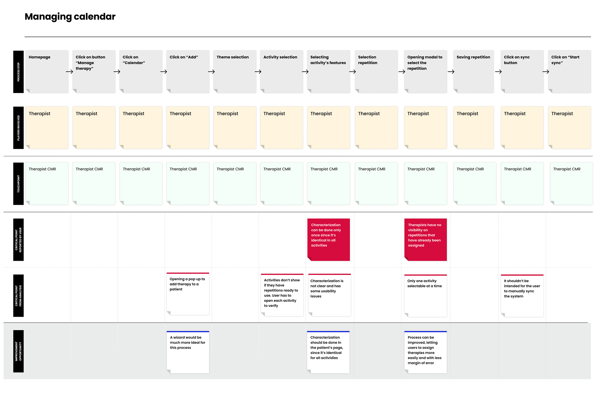
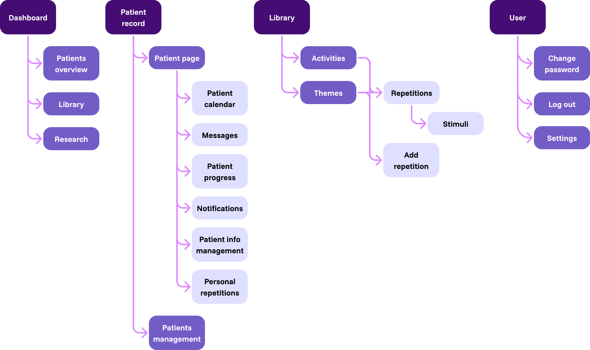
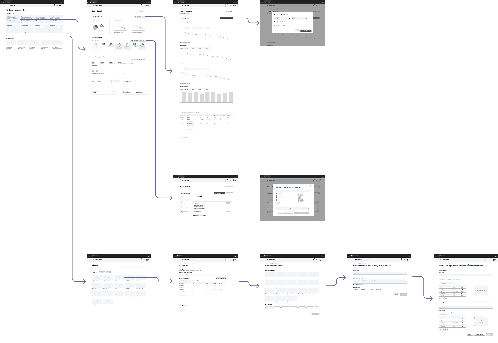
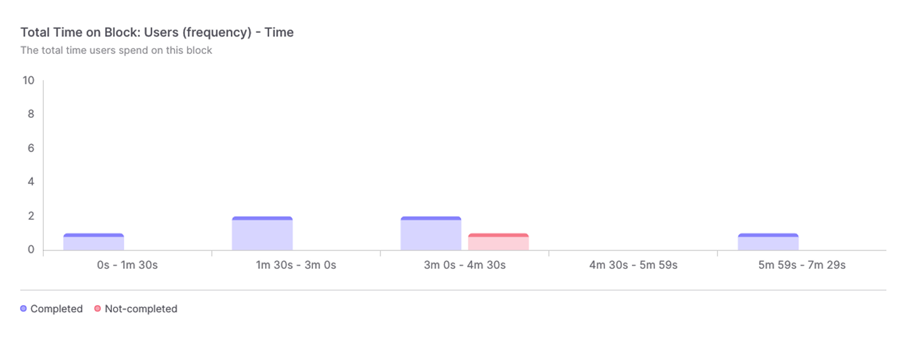
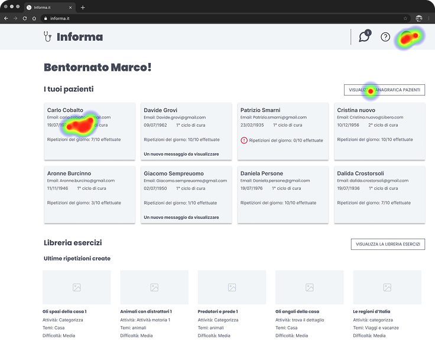
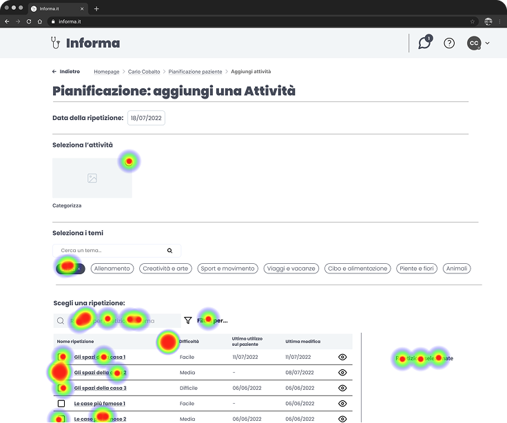
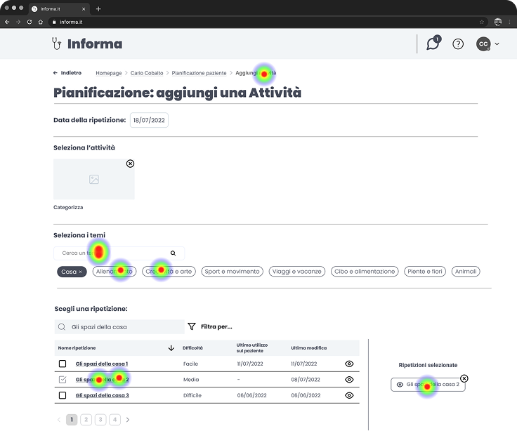

- 1 Project manager
- 1 Solution architect
- 2 UX designers
- 1 UI designer
- Figma
- Useberry
- Google suite (in p. Sheets)
Overview
Process
workshop
research
wireframing
workshop
research
wireframing
wireframing
wireframing
wireframing
Interviews
Interviews for doctors have been prepared with 3 main goals:
When completing a single exercise I often have to jump back and forth between different sections of the platform
We create user-specific exercises, depending on their disease and habits
There isn’t an automatic way to see if a therapy is giving the results we want: we have to assess it manually each time
Customer Journey maps
An extensive mapping of the management software has been done, detecting pain points and missed opportunities for each step of every user flow.
Here there are a couple of flows that have been mapped.

Information architecture
A revision of the information architecture has been made. The most influential change was about the access to repetitions, which can now be approached both from the activities and themes flows: user may want to create new repetitions from both, depending on the type of exercise.

Lo-fi wireframing
All user flows have been redesigned, keeping in mind that medics required flexibility in creating new exercises. Enhancement involved a wide variety of the system’s aspects; most important ones are described here.
dashboard
Implementing graphs and data to track patient’s evolution, previously made manually
Better representation of the agenda and management of patient’s exercises
Functional representation of user’s personal data
Adding a treatment cycle management feature for patients
creation
Implementing a wizard process pattern, more suitable than the previous system based on modals
Improving usability by simplifying the process and cutting down repetitive tasks
Better representing system’s status (e.g. implementing previews)
Automating audio instructions by the system
Using different, customizable patterns for visualizing the calendar
Adding features such as activity and theme filtering and therapy assignation to multiple patient
Showing relevant data on new assignments, such as difficulty, last modification, and last use of an exercise
Improved general usability by using more suitable patterns

Testing
Two rounds of remote testing of lo-fi wireframes have been done. The tool used was useberry, which allowed using figma prototypes for analyzing user’s paths for different tasks completion. Implementation of further questions was done after the task completion to gather qualitative data.




Three optional questions have been asked at the end of the testing:
How easy do you think it was completing all tasks? (1-5 range)
Do you have any advice to improve the system?
You can leave a free feedback if you want.
By analyzing all the data at our disposal we identified some insights.
New navigation and interactive patterns used in the new prototype have been confirmed to be effective
Finding the main commands for navigating the interface to the next/previous step at the bottom of the page was not always immediate
Users in general found themselves at ease while using the prototype for the new system
Wireframes have been updated to address the issue regarding navigation during flows. The fix did consist of using a sticky bar at the bottom of the viewport so it was always visible. A second iteration on user testing confirmed the problem as solved.
Hi-fi wireframing
What I learnt
This project has been overall an important learning experience since it let me take part of the design process in a structured way. The part I felt most important was closing the gap between myself and the medic team, using empathy to better understand deeper needs and take informed design decisions.